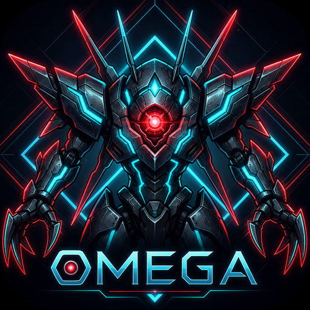
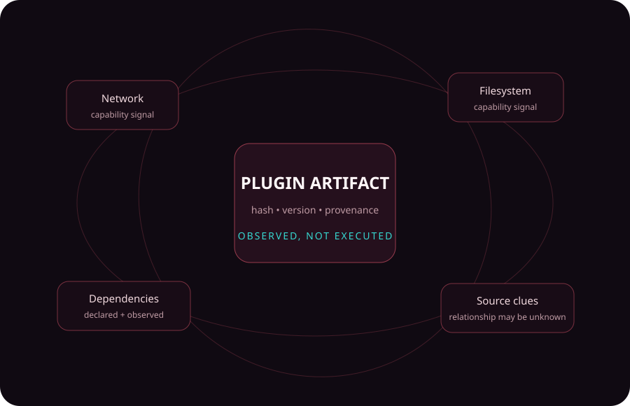
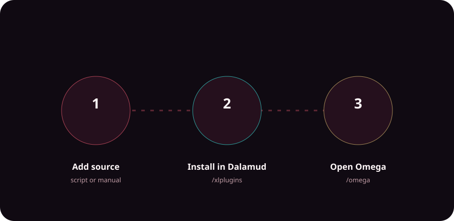

✦
Discover across sources
Find community projects wherever their creators publish them, without turning one repository into the definition of the ecosystem.
Omega is an open marketplace for the wider Dalamud plugin ecosystem—helping players discover community projects, trace their origins, and understand security signals before deciding what belongs in their game.


“Not a replacement for the moon—just a map of the stars around it.”
What Omega is
Dalamud provides the trusted framework, boundaries, and lifecycle that make the plugin ecosystem possible. Omega orbits alongside it as the discovery and information layer.
Find community projects wherever their creators publish them, without turning one repository into the definition of the ecosystem.
See repository, project, compatibility, dependency, and source-context signals where Omega can resolve them.
Security intelligence provides evidence and capability signals—not a magical “safe” badge.
Why Omega?
Omega takes its name from the ancient machine that crossed the stars to understand the strength of every challenger it faced—a friendly nod to Dalamud, the Allagan moon at the heart of one of FFXIV’s most enduring mysteries.
Where Dalamud provides the framework and lifecycle that make the ecosystem possible, Omega maps the wider constellation around it: discovering plugins, tracing their origins and dependencies, and surfacing security signals so players can make better-informed choices.
Omega is not here to replace the moon. It maps the wider constellation around it.
Lore-inspired visual language; not an in-game asset.
Security intelligence
Useful capabilities—network access, filesystem access, native code, automation, game-state access—can also deserve scrutiny. Omega surfaces what was observed and why it may matter while keeping uncertainty visible.
Read the security model →
See the actual product
The website intentionally does not expose a browsable copy of the plugin database. Discovery belongs inside Omega, alongside your current Dalamud environment, compatibility, sources, and install choices.
To explore the constellation, open Omega in game.
Optional Omega in-game screenshot
Add site/assets/screenshots/omega-home.png and the build will replace this panel automatically.
Installation
Register the Omega repository, install Omega through Dalamud, then open it in game. Use the transparent helper script or add the repository the conventional way.
View installation guide